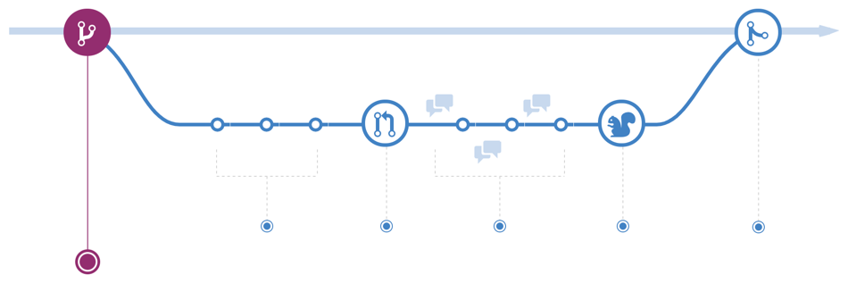
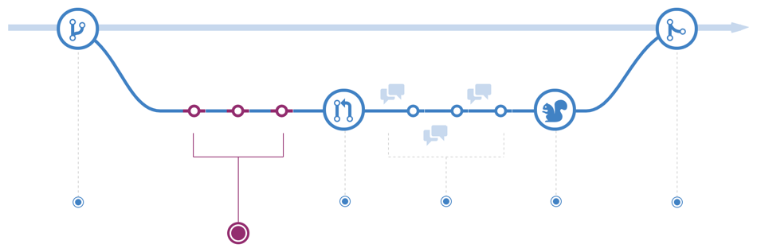
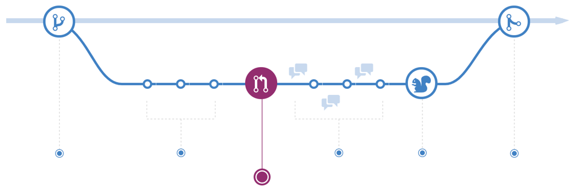
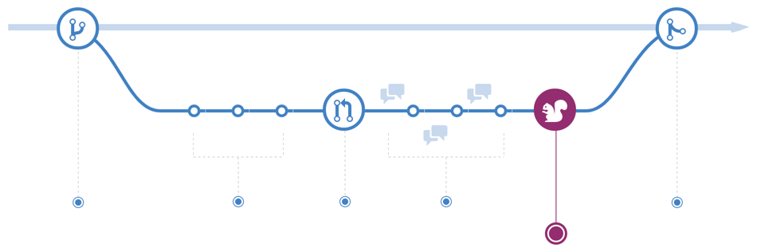

Git, GitHub
Команды git
Git Flow
Основные возможности
- git init
- git add
- git commit
- git status
- git config
- git branch
- git checkout
- git merge
Работа с удаленным репозиторием
- git remote
- git clone
- git fetch
- git pull
- git push
git fetch

Бонусные команды
- git stash
- git cherry-pick
- git rebase
1. Создать новую ветку

2. Добавить изменения (создать несколько новых коммитов)

3. Создать запрос на внесение изменений (pull/merge request)

4. Обзор и обсуждение кода Внесение новых изменений
5. Развёртывание кода и финальное тестирование

6. Внесение изменений в основную ветку